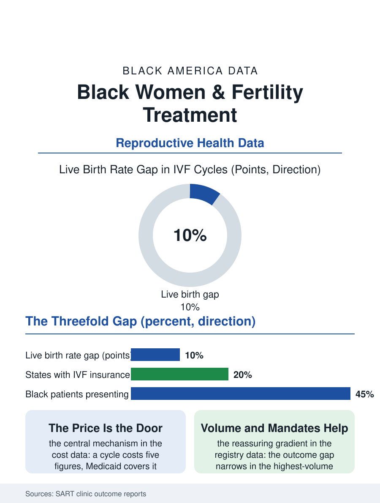

Black Public Health
Later, Poorer, Lower Success: Black Women and Fertility Treatment
Black women reach fertility treatment later, afford it less, and succeed at lower rates in the national registry, with insurance coverage the dominant variable. The fertility file.

Fertility treatment is the health file's most expensive lottery ticket, and Black women enter it later, afford it less, and succeed at lower rates in the national registry data, a threefold gap the reproductive medicine literature has documented with unusual consistency. The Society for Assisted Reproductive Technology's clinic outcome reports, covering nearly every American fertility clinic, give the pattern its numbers. This article reads the fertility treatment file.
Later, Poorer, Lower Success
The registry data's shape is the file's opening: Black women seeking in vitro fertilization present at older ages and with longer durations of infertility than white patients, the delay composed of the diagnosis lag, the referral lag, and the cost accumulation that precedes the first clinic visit, since the fertility workup itself, the testing that establishes the indication, is the first unaffordable step for the uninsured and underinsured patient. The cost structure is the file's central mechanism: a single IVF cycle runs in the five figures, the insurance mandates that require coverage exist in a minority of states and vary in their scope, and the Black patient population's concentration in the non-mandate states and the Medicaid population, which covers fertility treatment almost nowhere, converts the price into the gate. The outcome gap follows the delay and the diagnosis mix: Black patients' live birth rates per cycle trail the white rate by a substantial margin in the registry data, the difference persisting after adjustment for age and diagnosis in the analyses, composed of the fibroid burden the health file records, the tubal disease burden of the infection history, and the clinic-level variables the researchers can measure only partly, with the live birth gap narrowing but not closing in the highest-volume clinics, the volume-outcome relationship being the file's one reassuring gradient.
The Diagnosis Mix and the Clinic Door
The diagnosis file inside the registry shows the racial pattern's medical content: Black patients present more often with tubal factor and uterine factor infertility, the fibroid burden and the pelvic infection history of the gynecologic file written into the fertility indication, while white patients present more often with the ovulation and unexplained categories that respond best to the standard protocols. The treatment protocol literature records the consequence: the same stimulation regimens produce fewer eggs and lower implantation rates in the Black cohorts in the registry analyses, a pharmacologic and anatomic reality the clinics' individualized protocols are only beginning to address. The access geography compounds it: the fertility clinics cluster in the affluent metros and the mandate states, the travel and time costs of the cycle, the daily monitoring visits of the stimulation weeks, pricing out the hourly workforce in the schedule file's terms before the cycle's price is even reached. The donor and surrogacy markets add the file's sharpest racial edge: the egg donor market's pricing by the donor's education and appearance, and the surrogacy market's costs, reproduce the broader economy's hierarchies inside the clinic's waiting room, while the Black donor pool's thinness, a function of the same economics and the mistrust file, limits the options of the patients who need them.
The Coverage Question
The fertility file closes on the policy variable that dominates every other in the data: insurance coverage. The mandate states' Black patients access treatment at higher rates and earlier ages, the Medicaid programs' near-total exclusion is the file's largest single access barrier, and the employer market's fertility benefit, expanding in the technology and professional sectors, reaches the Black professional workforce while leaving the hourly majority outside, a distribution the benefits literature records as the newest form of the old access geography. The advocacy file, the patient organizations and the Black fertility community's own networks, the support groups and the financial assistance funds that the community built for itself, supplies the file's human counterweight, and the clinics that adopted sliding scales and shared-risk programs post the narrowest outcome gaps in the registry's clinic-level analyses. The registry counts the cycles each year, and the gap's persistence across a decade of data is the file's verdict on a system that prices its most intimate medicine at the level of a car, in a country where the Black wealth file prices the car out of reach. The treatment works, in the registry's own numbers, for the patients who reach it in time. The file is about the door, the price, and the years before it.
More in Black Public Health
Hypertension Among Black Adults: Prevalence, Control, and Consequences
About 55 percent of Black adults have hypertension — the highest rate of any U.S. group. Prevalence, onset, control, and the stroke, heart, and kidney consequences in the data.
Diabetes Among Black Adults: Prevalence and Complications
Nearly one in five Black adults has diabetes, diagnosed or undiagnosed — and its complications fall with particular weight. The CDC data on prevalence, control, and outcomes.
Black Life Expectancy: The Gap at Birth and Its Causes
Black life expectancy at birth is about 73 years, roughly five years below the national figure — the summary measure of every health gap in this section. The CDC data.
Source: Society for Assisted Reproductive Technology, Clinic Outcome Reporting System; fertility access and outcomes literature.